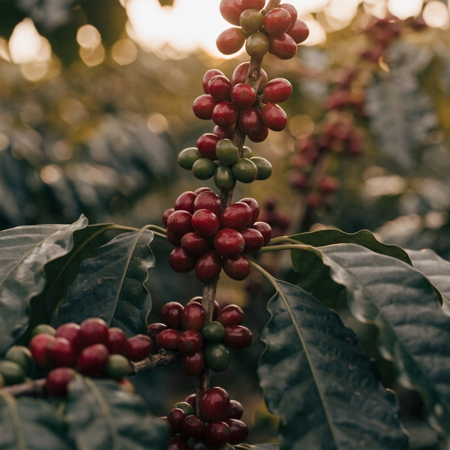
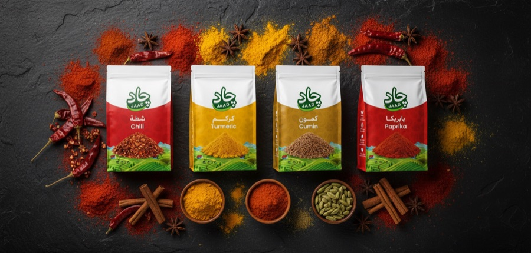

قصتنا
من الطبيعة إليك — جاد تقدم قهوة ومكسرات وبهارات طبيعية عالية الجودة، مصدرها الأصلي في قلب كل منتج.
قهوة ومكسرات وبهارات طبيعية، مصدرها الأصلي في قلب كل منتج.




من الطبيعة إليك — جاد تقدم قهوة ومكسرات وبهارات طبيعية عالية الجودة، مصدرها الأصلي في قلب كل منتج.
فلكل مُنتَج حكايته الخاصة؛ وبسبب اهتمامنا المستمر بالتفاصيل، فإن كل خطوة في عملية الإنتاج في جاد تُدار بعناية لضمان إنتاج منتجات عالية الجودة يتم توصيلها بحب وملئها بالمكونات المغذية من الطبيعة الأم.
نعطي الأولوية لابتكار المنتجات ونأخذ في الاعتبار اتجاهات السوق ورغبات العملاء وتغيُّر الأذواق، كما نشجع دائمًا نمط الحياة الصحي؛ لأن هدفنا ليس فقط تغذية الجسم، بل تغذية العقل والروح أيضًا.